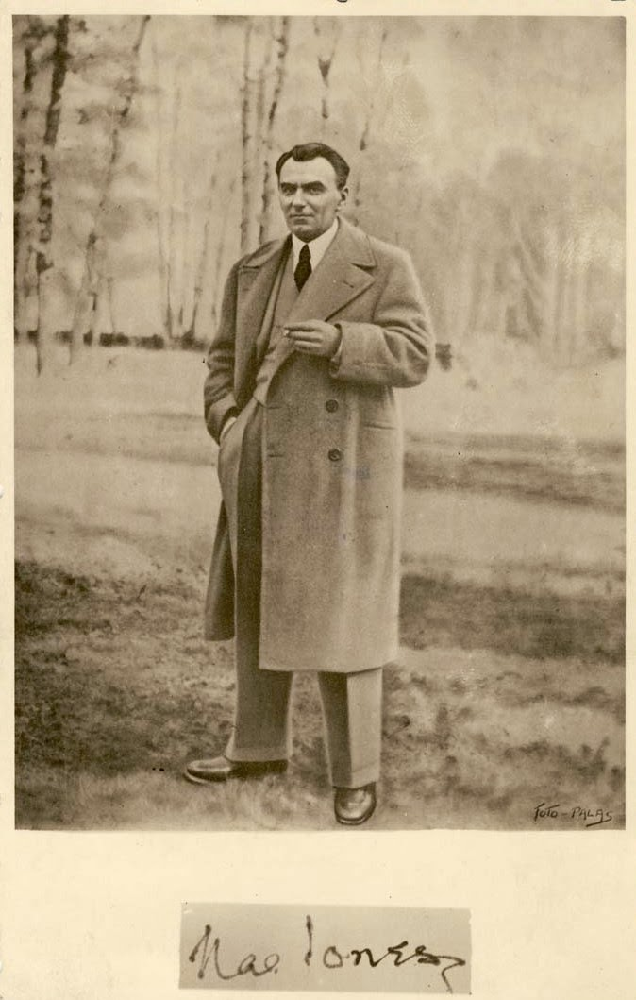

În perioada interbelică s-au pus bazele filozofiei Românești. Romantismul lui Eminescu și comediile lui Caragiale erau apuse, nu se mai regăseau în contextul acelei epoci. Realitatea era mai sobră și mai crudă. România a trecut printr-o perioada sângeroasă prin revolta țăranilor de la 1907 și prin primul război mondial. Dramele și tragediile din primul război mondial îndemnau intelectualii vremii către o analiză mai serioasă asupra existenței și a vieții.
Înainte de a trece la analiza marilor personalități precum Mircea Eliade – părintele Istoriei religiilor – Petre Țuțea, Nicolae Steinhardt, Emil Cioran, Mircea Vulcănescu, Constantin Noica, Mihail Sebastian, Lucian Blaga voi începe prin a prezenta viața lui Nae Ionescu, mentorul intelectualilor din acea vreme, cel care i-a inspirat și călăuzit pe drumul vieții lor. Nu voi începe să fac acum apologia acestor intelectuali care de multe ori s-au dovedit devianți. Unii dintre ei au avut înclinații legionare, anti-semite, gândiri și raționamente înclinate spre crime și depresii(vezi Cioran), fanatism religios, superstiție și misticism. De toate aceste aspecte negative nu avem nevoie în contextul lumii de azi. Însă voi încerca să scot la suprafață aspecte pozitive din gândirea și raționamentele lor.
Nae Ionescu a fost matematician, logician și filozof. Încă o dovadă în plus că filozofia și spiritualitatea sunt mai ușor și natural de abordat prin prisma științelor exacte. Acest matematician i-a inspirat pe toți filozofii care aveau să vină după el. La baza filozofiei românești și a laturii umaniste a României stă un matematician. Au existat personalități în acea epocă care l-au considerat pe Nae Ionescu atât de inteligent precum un diavol (Mihail Sebastian). Nae Ionescu nu a publicat nicio carte în timpul vieții sale – doar o colecție de articole gazetărești Roza Vânturilor la îndemnul lui Mircea Eliade. Nae Ionescu este important în cultura noastră prin activitatea sa jurnalistică intensă din acea perioadă pentru că a reușit să impregneze un stil și o direcție în care să meargă societatea. O serie de articole celebre ar fi : « Noua revistă română », « Ideea Europeană », « Predania», «Revista de filosofie», «Gâdirea» ; « Societatea de mâine », « Logos » şi numeroase articole în ziarul « Cuvântul ». Modul cum punea problema pe masă, capacitatea sa de analiză și sinteză, abordarea sa unică față de evenimentele societății, modul de rezolvare a diverselor situații au schimbat și revoluționat gândirea românească. Astfel a ajuns celebru și marcant în epocă. Nae Ionescu devine important și prin cursurile și discursurile sale în fața studenților prin care a reușit să inspire generații întregi. Activitatea sa de la catedră este și aceasta de o deosebită valoare care i-a consolidat rolul în societate. Deși în istorie, a rămas cu o imagine pătată de fanatic religios și legionar, datorită și evenimentelor oribile ce aveau să se întâmple ulterior (Al 2-lea război mondial, Holocaustul, asasinarea lui Nicolae Iorga, I. Gh. Duca și altele – Nae Ionescu nu a avut nici o implicare în asasinări și activitățile criminale ale legionarilor), el lua de multe ori în derâdere fenomenul religios atât pe ortodoxi cât și pe catolici. Omul acesta a fost deschis la minte, rațional și sesiza din timp habotniciile și stupizeniile din religie/spiritualitate. Din articolele sale se observă tonul ușor umoristic, de a lua în derâdere mari figuri religioase ale vremii.
Nae Ionescu a pus bazele unui curent filozofic numit “trăirism” care este exact ceea ce avem nevoie în epoca în care trăim. Trăirismul, tradus și sintetizat înseamnă pe scurt următoarele : trăiește aici și acum, fii prezent, fii cu totul în acest adânc prezent, fii conștient, fii treaz, iubește-te pe tine și iubește-ți semenii. Atât, nimic mai mult. Fundamental de simplu și esențial. Însăși cuvântul în sine “trăirism” denotă atitudinea pe care acest curent o adoptă. Este simplu să înțelegi conotațiile acestui cuvânt – trăirism. Practic tot ce trebuie să faci este să trăiești. Ce am prezentat aici este doar o sinteză. Nae Ionescu are și unele abordări mistice cu care nu sunt întru-totul de acord și nu cred că misticismul ar fi soluția în contextul lumii de azi. Însă ideea de bază rămâne și stă în picioare, “Fii prezent aici și acum, iubește-te pe tine și iubește-ți semenii”.
După cum am afirmat și în articolul anterior, cultura română este deosebit de valoroasă prin simplitatea ei și învățăturile ei deosebit de concentrate. Cultura română nu e bogată, ci este concentrată și esențială. Nae Ionescu prin “trăirism” este încă un exemplu.
În articolul următor îl voi aborda pe Mircea Eliade și temele principale ale activității sale : sacralitate, spiritualitate, istoria religiilor. Mircea Eliade este un adevărat monstru sacru. Mircea Eliade este cel care l-a numit pe falsul lider spiritual Jiddu Krishnamurti(idolul tuturor hipsterilor și a semidocților de astăzi, vezi în documentare precum Zeitgeist) un mare idiot și un prost. Voi explica în articolul următor de ce l-a numit imbecil. Mircea Eliade a prezis reîntoarcerea la spiritualitate și sacralitate pe care o experimentăm în zilele noastre.